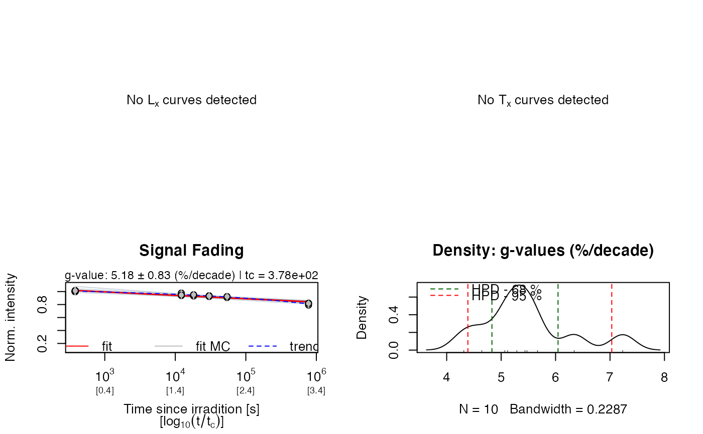
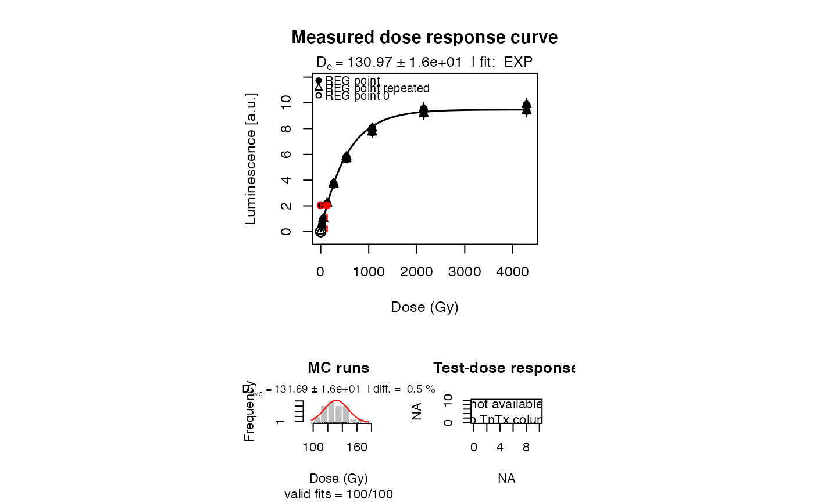
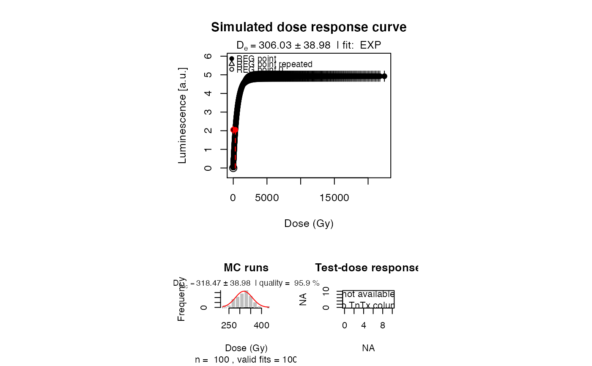
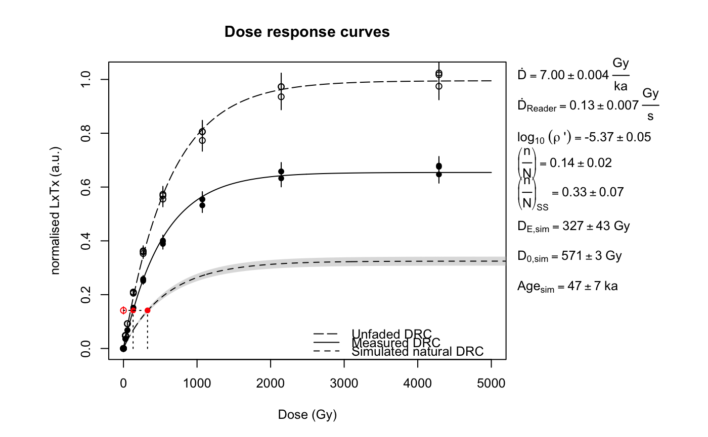

calc_Kars2008.RdA function to calculate the expected sample specific fraction of saturation
following Kars et al. (2008) and Huntley (2006). This function is deprecated
and will eventually be removed. Please use calc_Huntley2006() instead.
calc_Kars2008(fit.method = "EXP", ...)
| fit.method | character (with default):
Fit function of the dose response curve. Can either be |
|---|---|
| ... | Parameters passed to calc_Huntley2006. |
An RLum.Results object is returned:
This function applies the approach described in Kars et al. (2008),
developed from the model of Huntley (2006) to calculate the expected sample
specific fraction of saturation of a feldspar and also to calculate fading
corrected age using this model. \(\rho\)' (rhop), the density of recombination
centres, is a crucial parameter of this model and must be determined
separately from a fading measurement. The function analyse_FadingMeasurement
can be used to calculate the sample specific \(\rho\)' value.
This function is deprecated and will eventually be removed from the package.
Please use the function calc_Huntley2006() instead
(use fit.method = "EXP" to apply the model after Kars et al., 2008).
0.4.0
King, G.E., Burow, C. (2019). calc_Kars2008(): Apply the Kars et al. (2008) model (deprecated). Function version 0.4.0. In: Kreutzer, S., Burow, C., Dietze, M., Fuchs, M.C., Schmidt, C., Fischer, M., Friedrich, J. (2019). Luminescence: Comprehensive Luminescence Dating Data AnalysisR package version 0.9.1.9000-11. https://CRAN.R-project.org/package=Luminescence
Kars, R.H., Wallinga, J., Cohen, K.M., 2008. A new approach towards anomalous fading correction for feldspar IRSL dating-tests on samples in field saturation. Radiation Measurements 43, 786-790. doi:10.1016/j.radmeas.2008.01.021
Huntley, D.J., 2006. An explanation of the power-law decay of luminescence. Journal of Physics: Condensed Matter 18, 1359-1365. doi:10.1088/0953-8984/18/4/020
King, G.E., Herman, F., Lambert, R., Valla, P.G., Guralnik, B., 2016. Multi-OSL-thermochronometry of feldspar. Quaternary Geochronology 33, 76-87. doi:10.1016/j.quageo.2016.01.004
Further reading
Morthekai, P., Jain, M., Cunha, P.P., Azevedo, J.M., Singhvi, A.K., 2011. An attempt to correct for the fading in million year old basaltic rocks. Geochronometria 38(3), 223-230.
## Load example data (sample UNIL/NB123, see ?ExampleData.Fading) data("ExampleData.Fading", envir = environment()) ## (1) Set all relevant parameters # a. fading measurement data (IR50) fading_data <- ExampleData.Fading$fading.data$IR50 # b. Dose response curve data data <- ExampleData.Fading$equivalentDose.data$IR50 ## (2) Define required function parameters ddot <- c(7.00, 0.004) readerDdot <- c(0.134, 0.0067) # Analyse fading measurement and get an estimate of rho'. # Note that the RLum.Results object can be directly used for further processing. # The number of MC runs is reduced for this example rhop <- analyse_FadingMeasurement(fading_data, plot = TRUE, verbose = FALSE, n.MC = 10)## (3) Apply the Kars et al. (2008) model to the data kars <- suppressWarnings( calc_Kars2008(data = data, rhop = rhop, ddot = ddot, readerDdot = readerDdot, n.MC = 25) )#>#> #> [calc_Huntley2006()] #> #> ------------------------------- #> (n/N) [-]: 0.14 ± 0.02 #> (n/N)_SS [-]: 0.33 ± 0.07 #> #> ---------- Measured ----------- #> DE [Gy]: 130.97 ± 13.59 #> D0 [Gy]: 539.01 ± 19.37 #> Age [ka]: 18.71 ± 2.16 #> #> ---------- Un-faded ----------- #> D0 [Gy]: 629.07 ± 12.43 #> #> ---------- Simulated ---------- #> DE [Gy]: 327.2 ± 42.56 #> D0 [Gy]: 570.54 ± 3.48 #> Age [ka]: 46.74 ± 6.51 #> Age @2D0 [ka]: 163.01 ± 8.21 #> ------------------------------- #>